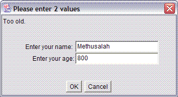
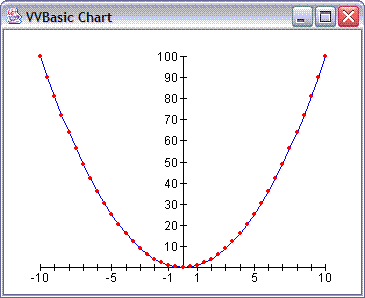

This table provides an overview of the VVBasic commands:
| Command | Example | Description |
|---|---|---|
| PRINT Name " paid " Price+Tax | Sends text to the Output Window. | |
| CLEAR | CLEAR | Clears (removes all text from) the Output Window. |
| NUMBER | NUMBER Cost = 17.95 | Creates a numeric variable and (optionally) assigns it a value. |
| TEXT | TEXT Name = "Joe" | Creates a text string variable and (optionally) assigns it a value. |
| LET | LET X = X + 1 | Assigns a value to a variable. |
| IF | IF A > B THEN LET MAX = A ELSE LET MAX = B ENDIF | Conditionally executes some commands. Every IF must have a matching ENDIF. |
| FUNCTION |
FUNCTION MAX(NUMBER X, NUMBER Y) IF X > Y THEN RETURN X ELSE RETURN Y ENDIF ENDFUNCTION | Creates a user-defined function. Every FUNCTION must have a matching ENDFUNCTION. |
| RETURN | RETURN X | Specifies the "return value" of the function the RETURN is defined within. Every function must have at least one return value, and RETURN can only be used within a function definition. |
| REPEAT |
REPEAT LET X = X / 2 PRINT X IF X < 0.001 THEN BREAK ENDIF ENDREPEAT | Creates a "loop," so that commands between REPEAT and the matching ENDREPEAT can be executed multiple times. Every REPEAT must have a matching ENDREPEAT. The commands in a repeat loop are repeatedly execute until BREAK or RETURN is executed, or the user presses the Stop button. |
| BREAK | See example for REPEAT above. | Ends the execution of a repeat loop. After the BREAK command, the next command executed is the one following the ENDREPEAT statement. A BREAK command can only be used inside a repeat loop. |
| FOR |
FOR I = 1.0 TO 3.0 STEP 0.25 PRINT I, I*I, I*I*I ENDFOR | Creates a "loop," so that commands between FOR and the matching ENDFOR can be executed multiple times. The variable I changes value each time through the loop, according to the starting, ending, and step values given. |
| INPUT |
INPUT "Enter your name: " Name, "Enter your age:" Age WHEN Age < 0 COMPLAIN "Age value too low." WHEN Age > 80 COMPLAIN "Too old." | Creates a dialog box with which the user can enter values.
 |
| PLOT |
FOR I = -10 TO 10 STEP 0.5 PLOT I, I*I ENDFOR | Specifies a point on a graph. The graphing window and the
graph axes are automatically created when the first PLOT
command is executed.
 |
| GRAPHOPTION |
GRAPHOPTION POINTSHAPE TRIANGLE GRAPHOPTION POINTCOLOR RED GRAPHOPTION POINTSIZE 5 GRAPHOPTION BOTTOMTEXT "Graph of homework assignments" | Controls the formatting of a graph window. GOPT is an abbreviation for GRAPHOPTION. |
| function call |
NUMBER Cost = 12.3456 TEXT Name = "Corrugated Widget" PRINT ToUpper(Name) " " Round(Cost, 2) | VVBasic provides a range of built-in functions (such as ToUpper and Round), and the user can define additional ones. |
| REM REMARK COM COMMENT // |
REM If cost is over $1.00, add 8% tax IF Cost > 1.00 THEN LET Cost = Cost * 1.08 // add 8% ENDIF | //, REM or any of the other versions says that the remainder of the line is a comment, to be ignored by the computer. |